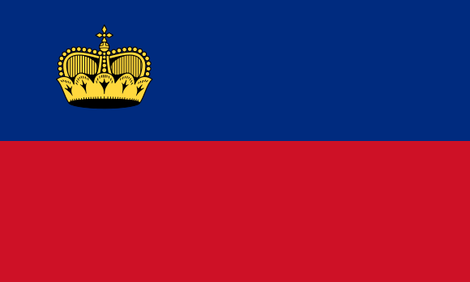

Home Page
Points of Interest
Population
Graphs
Maps
Citations
Liechtenstein Population Project
By Drew Nason and Luc Jourdain

The flag of Liechtenstein is quite simple; it has 2 stripes the one on the top being blue and the one on the bottom red, with a golden crown in the top left hand corner.